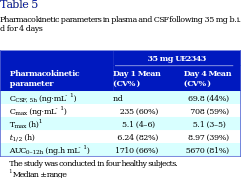

<?xml version="1.0" encoding="UTF-8"?>
<table title="table5" id="table5" class="tabcontent" xmlns="http://www.w3.org/1999/xhtml">
 <tr>
  <td>
   
   <p>corpus-oa-validation/10.1111_bph.13699/tables/table5/table.svg.png</p>
  </td>
  <td>
   <table class="table">
    <caption/>
    <tr>
     <th class="cell">C _{CSF,} _{5h} C _{max} (ng·mL ^{-1} ) T _{max} (h) ^{1} t _{1/2} (h) AUC _{0–12h} (ng.h mL ^{-1} ) </th>
     <th class="cell">(ng·mL ^{-1} ) </th>
     <th class="cell">nd 235 (60%) 5.1 (4–6) 6.24 (82%) 1710 (66%) </th>
     <th class="cell">69.8 (44%) 708 (59%) 5.1 (3–5) 8.97 (39%) 5670 (81%) </th>
    </tr>
    <tr>
     <td class="cell">The study was conducted in four healthy subjects.</td>
    </tr>
    <tr>
     <td class="cell">^{1 Median ± range}</td>
    </tr>
   </table>
   <p>corpus-oa-validation/10.1111_bph.13699/tables/table5/table.svg.html</p>
  </td>
 </tr>
</table>
